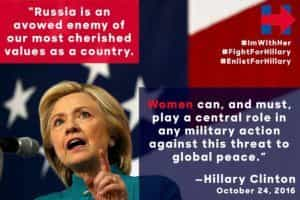
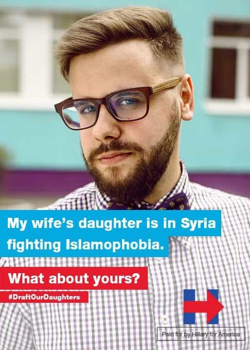
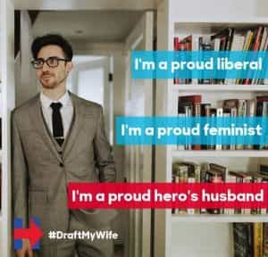
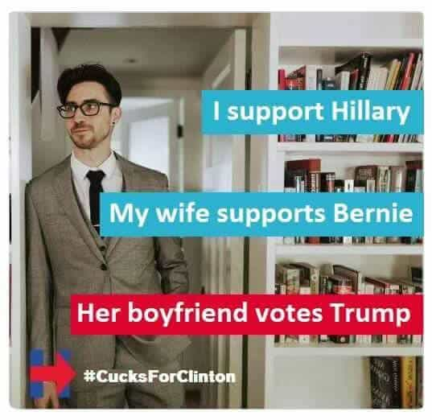
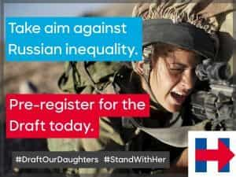
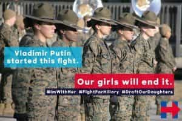
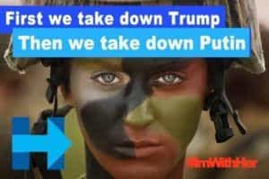
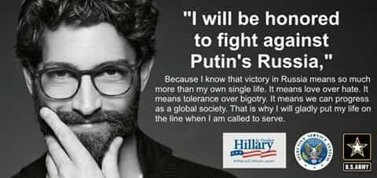
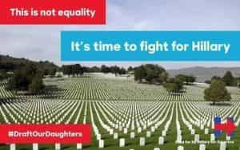

Michael is the author of Staying Married in a Degenerate Age. Follow him on Twitter or Facebook. You can read more of his writing at Honor and Daring.


October has been a portentous month for the presidential campaign. In the beginning of the month women came forward accusing Trump of unwelcome advances. Later, FBI Director James Comey re-opened the criminal investigation of Hillary Clinton after finding more government emails on pervert Anthony Weiner’s computer. But the most important event may be a meme campaign that highlights Hillary’s support forcing women to register for the selective service.
The meme campaign consisted of dozens of fake ads posted under the #DraftOurDaughters hashtag that highlight two very important policy points of the Hillary campaign: First, Hillary is a radical feminist. Thus she favors equality in all things—that includes equality in combat. As a step in that direction, Hillary told the Huffington Post that she will support legislation to register for the draft.
Young women may think registering for the draft is not a big deal. They should reconsider because of the second policy of the Clinton campaign: She will almost certainly start a war against Russia—a war that will see those young women drafted into combat on the front lines.
Hillary has repeatedly blamed Russia for Wikileaks and she stated that she would get revenge through military action:
As president I will make it clear that the United States will treat cyber attacks just like any other attack. We will be ready with serious political, economic and military responses.
The #DraftOurDaughters campaign could be the thing that brings down the Hillary campaign. To get elected, Hillary relies on two demographics: People of Color and liberal white women. Up until now, women have been able to support leftist social policy because it did not impact them negatively. If they become aware that Hillary intends to draft them into combat to fight a war with Russia, they may re-think the wisdom of their equalist position.
Here are some of the best examples of the #DraftOurDaughters campaign.

I feel this one is the most powerful. It clearly states Hillary’s intention to put women into combat and start a war with Russia. Unlike the Arab nations that the US has been toppling for the neocons, Russia has a formidable military and nuclear weapons. Any military conflict will not be short and easy. That means it will highly likely that young women will soon find themselves getting blown to smithereens if they elect Hillary.



The above three ads all target the weak, cowardly men who either support Hillary or the Never Trump cuckservatives. In the Alt Right, these men are frequently portrayed as being cuckolded by wives. Hence, they are often mocked for their wives having children who are not their own: “My wife’s son” or “My wife’s daughter.”
The ad below drives this point home even more forcefully. While women might encourage their men to vote Hillary or oppose Trump for being too alpha, they secretly despise the weakness of these men.

The following ads are directed to convincing women of the ramifications of their decision to vote feminist. Feminism taken to its logical conclusion means you are going to have to trade your Louboutins for combat boots.




Lots of the ads emphasize Hillary’s extremely aggressive stance toward Putin and Russia. She has blamed WikiLeaks on Russian hacking even though there is no proof that the Russians were to blame. And she and the Obama administration have been saber rattling against Russia in Syria.
The really frightening thing is that mainstream pundits are now starting to parrot the idea that the US must go to war with Russia. All the more reason to elect someone who is not controlled by wealthy donors like Hillary.


The ad below indicates that our “enemy” Putin has a saner view on women in combat than the Democrats do.

While the campaign is mostly geared to point out Hillary’s intention to draft women, it also reminds men that their lives will not be spared in the conflagration that Hillary will start.

The media often portrays war as a sanitized affair. A soldier, safely positioned in a US-located command center, controls a drone that takes out the bad guys. The reality of war is that people from both warring factions die and are maimed. Once Hillary gets in, it won’t be just men dying in large numbers. Women will experience equality in having their lives snuffed out.


A final ad drives home the point that the future war with Russia (and Iran and Syria) will not be any sort of conflict against barbarism or evil. It will be for Hillary’s power trip.
Elections matter. For decades, women have voted for leftist policies that have put the burden on other people. If they are successful in electing Hillary, they will face the bitter consequences of their decisions. But unfortunately, they will not be the only people impacted. Thousands of innocent Americans, Russians, Syrians, and Iranians will also have to pay the price of their virtue signaling.
The #DraftOurDaughters campaign may be enough to wake some of them up from their folly.
Read More: Hillary’s Alt Right Speech Bombed